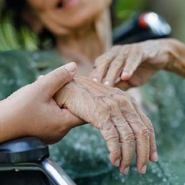
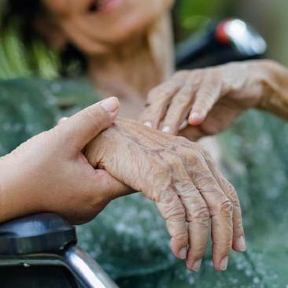

5 Penyakit Terbanyak di Indonesia
 |
 |
 |
| Penyakit Jantung | Tuberkulosis | Stroke |
 |
|
| Hipertensi | Diabetes |
kesehatan masyarakat di Indonesia sampai saat ini masih menjadi perhatian bagi pemerintah. Kesadaran masyarakat akan pentingnya kesehatan masih rendah. Tingkat kesehatan masyarakat yang tidak merata dan sangat rendah khususnya terjadi pada masyarakat yang tinggal di pemukiman kumuh. Perilaku masyarakat yang masih tidak higienis ditambah lagi dengan tidak adanya sarana dan prasarana lingkungan yang mendukung berdampak pada kesehatan masyarakat yang tinggal pada pemukiman kumuh tersebut. Banyak masalah kesehatan masyarakat yang mungkin akan timbul akibat perilaku masyarakat dan kondisi lingkungan yang tidak memperhatikan kesehatan.
Masalah anemia pada anak sekolah juga masih menjadi masalah kesehatan masyarakat di Indonesia. Penelitan yang dilakukan oleh Sri Desfita yang mengangkat tema tentang Prevalensi anemia pada anak sekolah, Status gizi dan kebiasaan makan pagi makan pagi pada murid SD, didapatkan hasil bahwa prevelensi anemia pada murid SD adalah sebesar 34,2%, prevalensi gizi kurang sebesar 15,2% dan masih banyak murid SD yang tidak biasa makan pagi.
Belum maksimalnya upaya yang dilakukan oleh pemerintah menyebabkan masalah kesehatan masyarakat masih tetap ada. Selain itu perilaku masyarakat yang belum sepenuhnya menerapkan Perilaku Hidup Bersih dan Sehat (PHBS) merupakan faktor resiko untuk terjadinya berbagai masalah kesehatan masyarakat di Indonesia.
Kompleksnya masalah kesehatan menjadi perhatian bagi pemerintah. Perlu adanya perencanaan dari pemerintah untuk mengatasi berbagai masalah kesehatan tersebut. Perencanaan kesehatan adalah sebuah proses untuk merumuskan masalah-masalah kesehatan yang berkembang di masyarakat, menentukan kebutuhan dan sumber daya yang tersedia, menetapkan tujuan program yang paling pokok dan menyusun langkah-langkah praktis untuk mencapai tujuan yang telah ditetapkan. Keberhasilan program salah satunya ditentukan oleh perencanaan yang baik.
|
|
 |
| Penyakit Jantung | Tuberkulosis | Stroke |
|
|
| Hipertensi | Diabetes |
| No | Nutrisi | Kebutuhan | Contoh makanan/minuman |
| 1 | Karbohidrat | 45-65% dari total kalori harian | Nasi, Roti gandum, Kentang, Oatmeal, dan Pasta |
| 2 | Protein | 10-35% dari total kalori harian. | Telur, Dada ayam, Ikan salmon, Tahu, dan Kacang almond |
| 3 | Lemak | 20-35% dari total kalori harian | Alpukat, Ikan salmon, Kacang-kacangan, Minyak zaitun, dan Biji chia |
| 4 | Serat | 25 g untuk wanita dan 38 g untuk pria | Brokoli, Apel, Oatmeal, Kacang hitam, dan Alpukat |
| 5 | Vitamin A | 700-900 µg | Wortel, Ubi jalar, Bayam, Hati sapi, dan Pepaya |
| 6 | Vitamin C | 75-90 mg per hari. | Jeruk, Kiwi, Paprika, Stroberi, dan Brokoli |
| 7 | Vitamin D | 15 µg | Ikan salmon, Ikan sarden, Hati sapi, Kuning telur, dan Susu |
| 8 | Kalsium | 1000 mg | Susu, Sayuran hijau, Tahu, Kacang almond, dan Ikan |
| 9 | Zat Besi | 8-18 mg | Daging merah, Hati, Kacang-kacangan, Sayuran hijau gelap, dan Ikan |
| 10 | Magnesium | 310-420 mg | Kacang-kacangan, Biji-bijian, Sayuran hijau, Gandum, dan Ikan |
| 11 | Air | 2-3 liter | - |
Tips memulai pola hidup sehat yang pertama adalah rajin berolahraga. Jangan khawatir, Anda tidak harus selalu melakukan olahraga berat seperti jogging dan gym. Cobalah memulai dengan olahraga ringan atau yang paling disukai, misalnya berenang dan jalan kaki.
Jika ingin mencapai hidup sehat, maka penting untuk mengonsumsi makanan sehat, seperti sayur dan buah-buahan. Lalu, cobalah untuk memasak makanan sendiri di rumah untuk menjaga kebersihan serta kesehatan makanan yang dikonsumsi.
Tidak hanya mengonsumsi makanan sehat, mencukupi kebutuhan cairan tubuh juga tak kalah penting dalam menerapkan pola hidup sehat. Cukupi kebutuhan tubuh dengan mengonsumsi setidaknya dua liter air putih per hari.
Ternyata kesehatan tubuh tidak hanya dipengaruhi oleh makanan maupun aktivitas sehari-hari, tetapi juga dipengaruhi oleh kesehatan mental. Orang dengan tingkat stres yang tinggi cenderung lebih mudah mengalami gangguan kesehatan, seperti penyakit asam lambung (GERD).
Memastikan bahwa tubuh memiliki waktu istirahat yang cukup dapat membantu mewujudkan tubuh dan pikiran yang sehat. Karenanya, usahakan Anda tidur setidaknya 7–9 jam per hari dengan waktu tidur dan bangun tidur yang konsisten.
Mengurangi konsumsi gula juga menjadi salah satu dari langkah-langkah pola hidup sehat yang dapat diterapkan dari sekarang. Pasalnya, asupan gula berlebih dapat meningkatkan risiko diabetes dan berbagai penyakit kronis lainnya. Sedangkan terlalu banyak mengonsumsi garam secara rutin dapat menyebabkan penyakit hipertensi.
Usahakan untuk melakukan pemeriksaan kondisi kesehatan secara rutin. Penting bagi setiap orang untuk mengetahui kondisi kesehatannya sendiri. Dengan demikian, penyakit-penyakit tertentu akan lebih mudah terdeteksi sejak dini dan dapat diberikan pengobatan sesegera mungkin.
Beberapa kebiasaan buruk yang dapat berdampak negatif pada kesehatan adalah merokok dan minum alkohol. Merokok dalam jangka panjang diketahui dapat meningkatkan risiko penyakit paru-paru, stroke, dan penyakit jantung.
| : kitasehat@gmail.com | ||
| No. telepon | : +62 927-2750-8263 | |
| : @kita_sehat.com | ||
| Youtube | : @kitasehatofficial.com |
Lihat Profil Pembuat